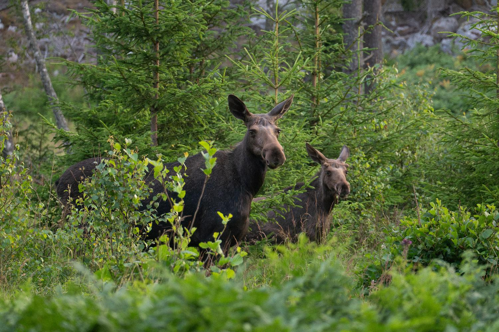
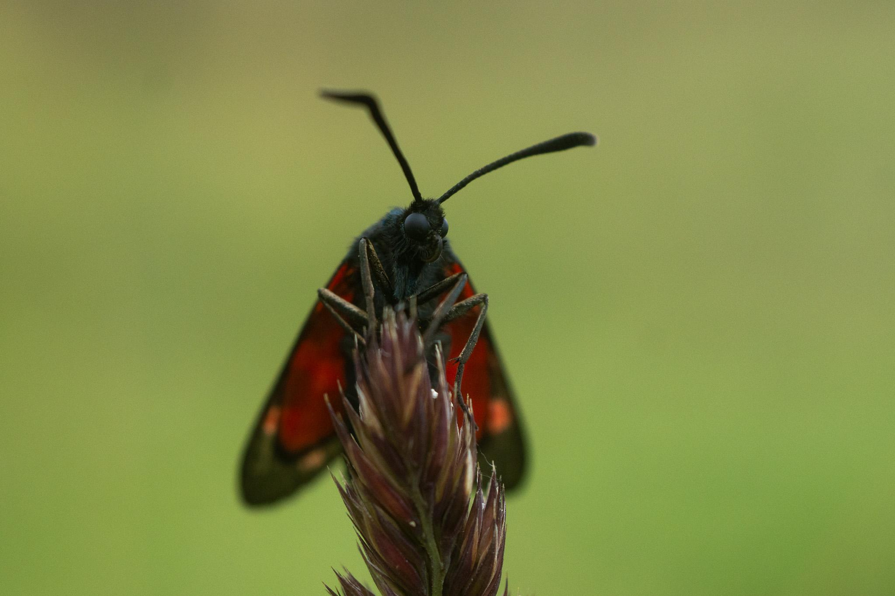
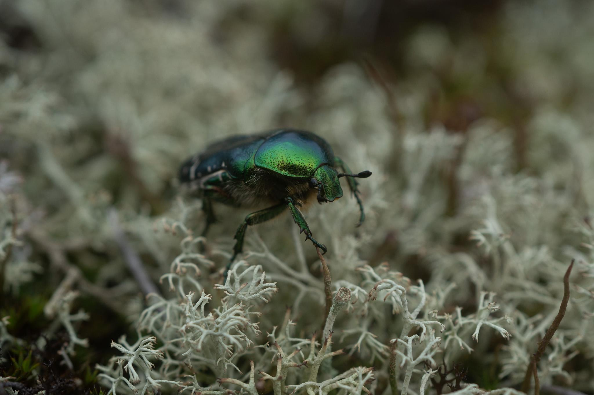
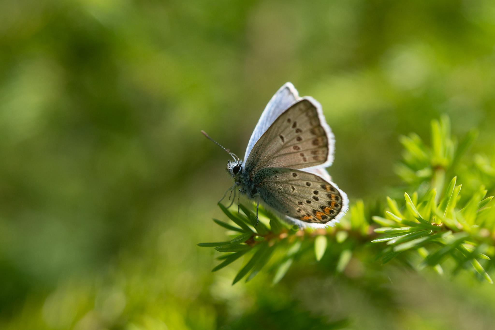

Welcome to NSU Circle 5: Ecology of Transformative Learning Practices With/In A More-than-human World
In this study circle, we nurture a diversity of practices for mutual learning and knowledge creation through conversation and play with the “more than human”. We build a community of practice, where we create ‘playgrounds’, ‘ephemeral ponds’ or spaces of not knowing, which are focused around prompts and themes for especially young scholars to experience and test methods, and examine afterwards through their own frameworks/theories. These spaces aim to instil opportunities to grow epistemological humility and inner pathways toward responsibility.
 
 
Crafted with ❤️ in Brussels, Belgium